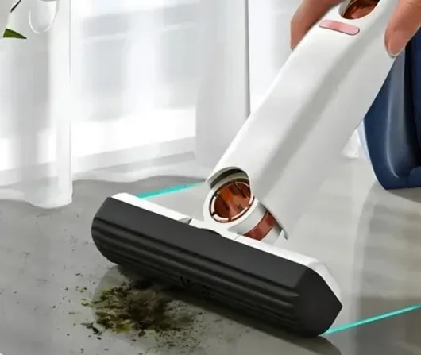
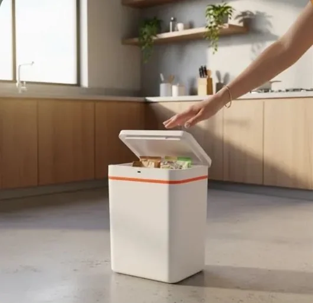

Casa práticaCASA E ORGANIZAÇÃO
Mini mop portátil dobrável
Um formato compacto para cuidar de bancadas e pequenos espaços.
Ver oferta no Mercado LivreACHADINHOS PARA A VIDA REAL
Pequenas descobertas que facilitam o dia a dia. A gente garimpa. Você escolhe o que combina com a sua rotina.
Explorar os achadosCasa, cozinha e um toque de criatividade.
 Um universo
Um universoA NOSSA SELEÇÃO
Escolha uma categoria e encontre seu próximo achado.
5 achados para explorar

Casa práticaCASA E ORGANIZAÇÃO
Um formato compacto para cuidar de bancadas e pequenos espaços.
Ver oferta no Mercado Livre
Um toque de praticidadeCASA E ORGANIZAÇÃO
Abertura por aproximação para facilitar a rotina. Modelo de 12 litros.
Ver oferta no Mercado Livre Banheiro organizado
Banheiro organizadoCASA E ORGANIZAÇÃO
Uma ideia para organizar a bancada. Modelo preto com 6 níveis.
Ver oferta no Mercado LivreO achado da vezDECORAÇÃO
Nebulosas, estrelas e controle remoto para dar outro clima ao seu cantinho.
Ver oferta no Mercado Livre Cozinha descomplicada
Cozinha descomplicadaCOZINHA
Uma ajuda compacta para o preparo de pequenas porções. Versão verde.
Ver oferta no Mercado LivreConfira no anúncio a cor, as medidas, os acessórios e a voltagem antes de comprar.